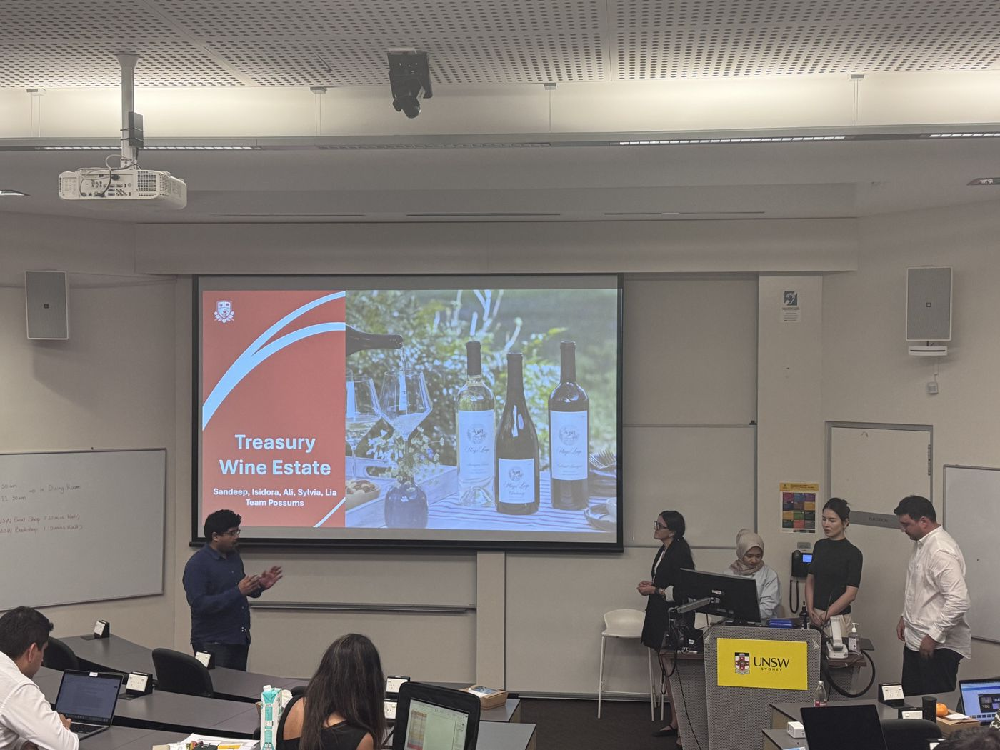
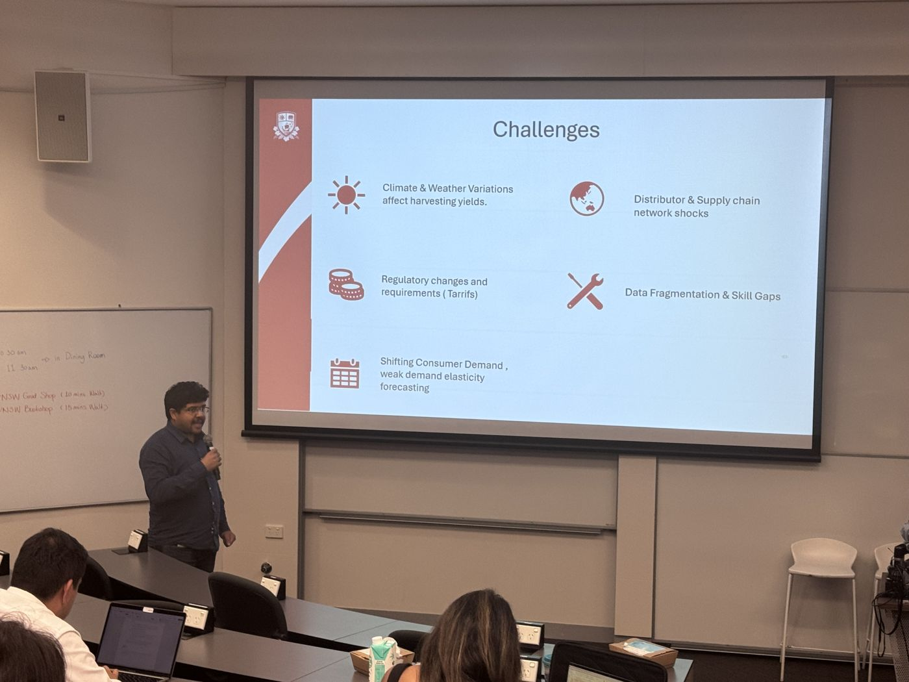
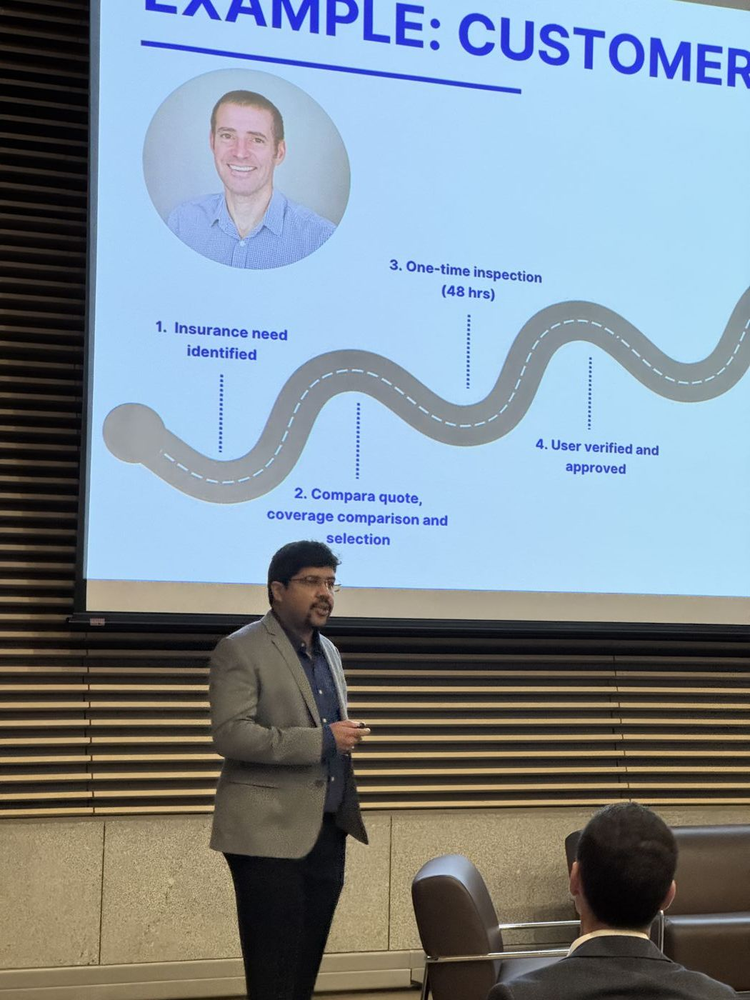
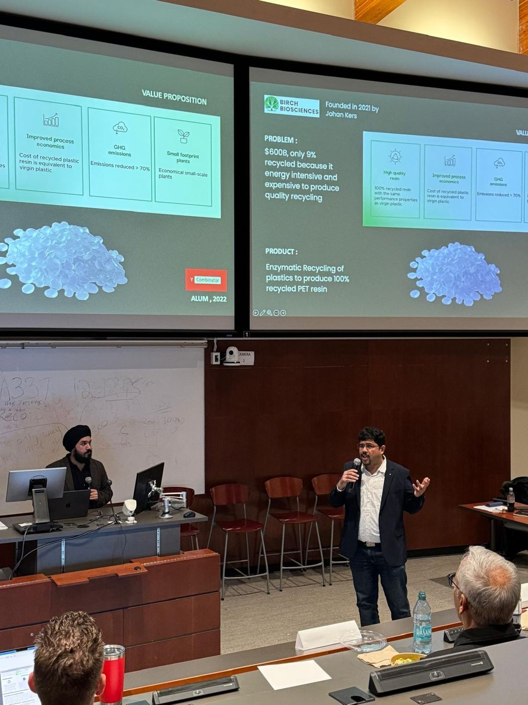
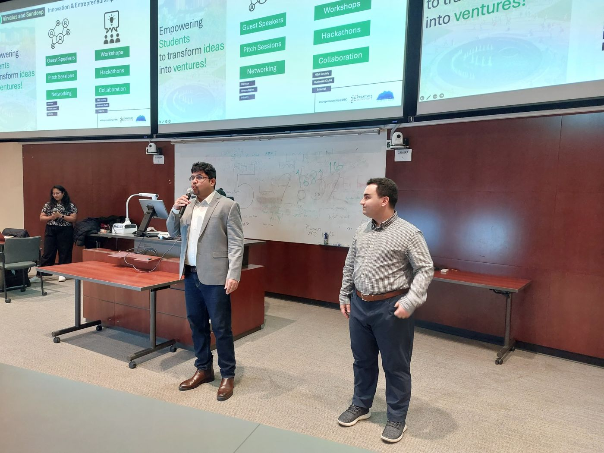
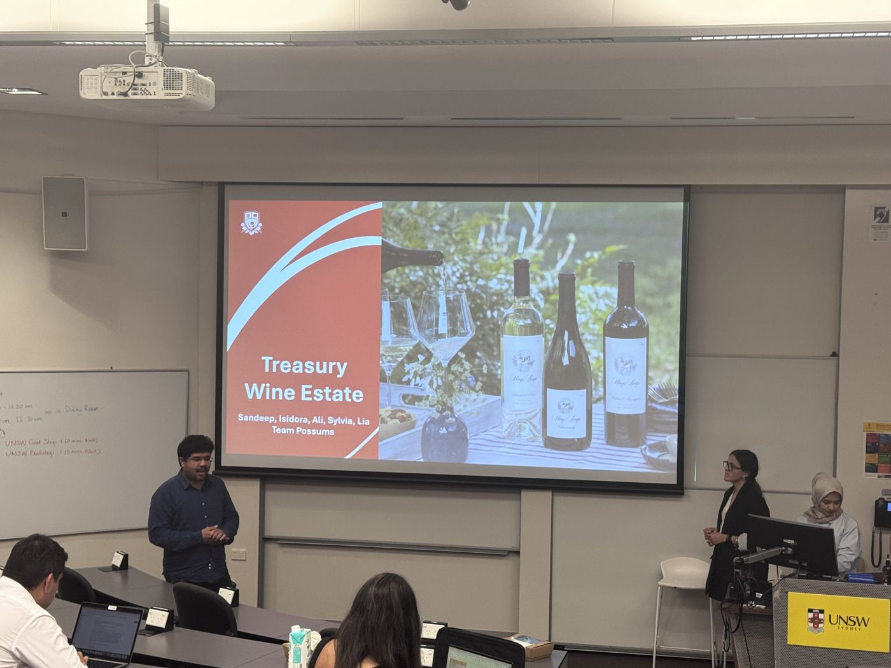
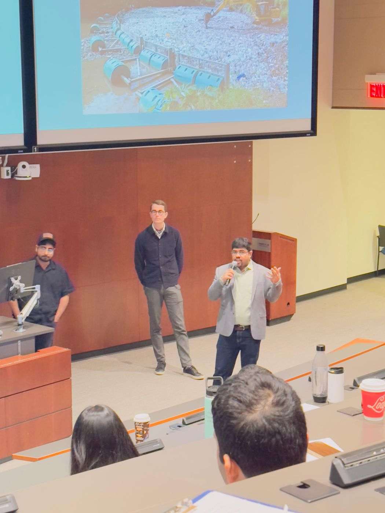
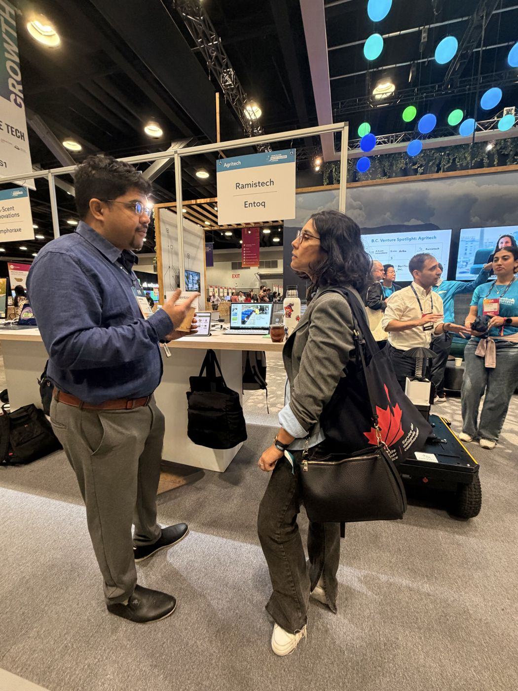
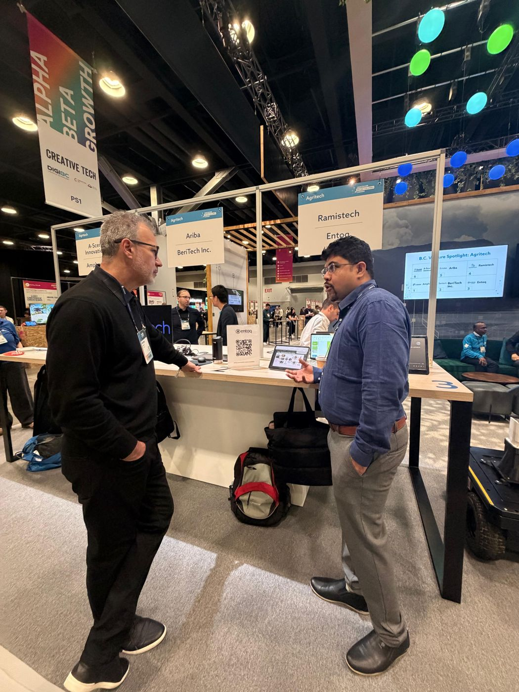

From global case competition finals in Sydney to venture pitches, deep-tech evaluations, and tradeshow floors — a selection of moments presenting strategy, technology, and ventures to audiences of investors, executives, and students.








